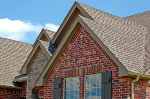

Fort Collins Roof Maintenance

If you own a residential or residential property in the Fort Collins or Central Colorado area, you know that your roof can take a beating. Everything from inclement weather, to falling trees, to general aging takes a toll on your roofing system.
If your roof is not maintained properly you could end up paying for a full roof replacement. At Kessler Roofing, Inc., we offer annual roof maintenance for both residential property owners, which can help preserve the health and effectiveness of a roof for years beyond its expected service life. Rather than going through the process of constantly repairing your residential or residential roof when something goes wrong, it makes more sense to avoid disaster by having Kessler Roofing, Inc. perform regularly scheduled maintenance.
Our expert roofers have the factory-trained insight needed to recognize even the earliest signs of potential damage. We can quell cracks in your roof before they widen and become full leaks. We can also stop mold and mildew in their tracks, helping to keep your residential property safe and dry.
Let Kessler Roofing, Inc. Maintain Your Fort Collins or Central Colorado Residential or Residential Roof
At Kessler Roofing, Inc., we have been the top choice as a residential roofing contractor in Fort Collins for many years thanks in large part to our comprehensive maintenance program. When you need a roofing contractor in Fort Collins, or anywhere in Central Colorado, we have all the tools necessary to properly install, repair, or maintain your roof.
No matter the size, shape, or age of your roof, Kessler Roofing, Inc. has the top quality materials and a highly skilled staff necessary to keep it operating at peak efficiency. Give us a call today or request a quote to learn more about our regularly scheduled maintenance program.
Residential & Residential Roof Maintenance in Fort Collins & Central Colorado
Do you own a residential or residential property? Do you need roof maintenance, new roofing, or effective roof repair in Fort Collins or the surrounding areas? Residential and residential roofing are highly specialized areas, and no roofing company has more knowledge and expertise in residential roofing than Kessler Roofing, Inc. Give us a call today at 970-667-6850 to schedule an estimate on your Fort Collins area residential or residential roofing project.
Services Our Fort Collins Roofing Contractors Offer
- Roof Repairs
- Leak Repair
- Roof Replacement
- Roofing Contractor
- Roofing
- Roof Types
- Repairing Roofs
- Roofing Materials
- Roofing Shingles
- Asphalt Shingles
- Tile Roof Repair
- Metal Roof Repair
We Provide Roof Maintenance in The Following Towns & Surrounding Areas
Fort Collins, CO Roofing Contractors | Loveland, CO Roofing Contractors | Windsor, CO Roofing Contractors | Laporte, CO Roofing Contractors | Wellington, CO Roofing Contractors | Timnath, CO Roofing Contractors | Greeley, CO Roofing Contractors | Severance, CO Roofing Contractors | Eaton, CO Roofing Contractors | Bellvue, CO Roofing Contractors | Berthoud, CO Roofing Contractors | Garden City, CO Roofing Contractors | Evans, CO Roofing Contractors | Kersey, CO Roofing Contractors | La Salle, CO Roofing Contractors | Ault, CO Roofing Contractors | Pierce, CO Roofing Contractors | Galeton, CO Roofing Contractors | Lucerne, CO Roofing Contractors | Johnstone, CO Roofing Contractors | Milliken, CO Roofing Contractors | Arrowhead, CO Roofing Contractors | Nunn, CO Roofing Contractors